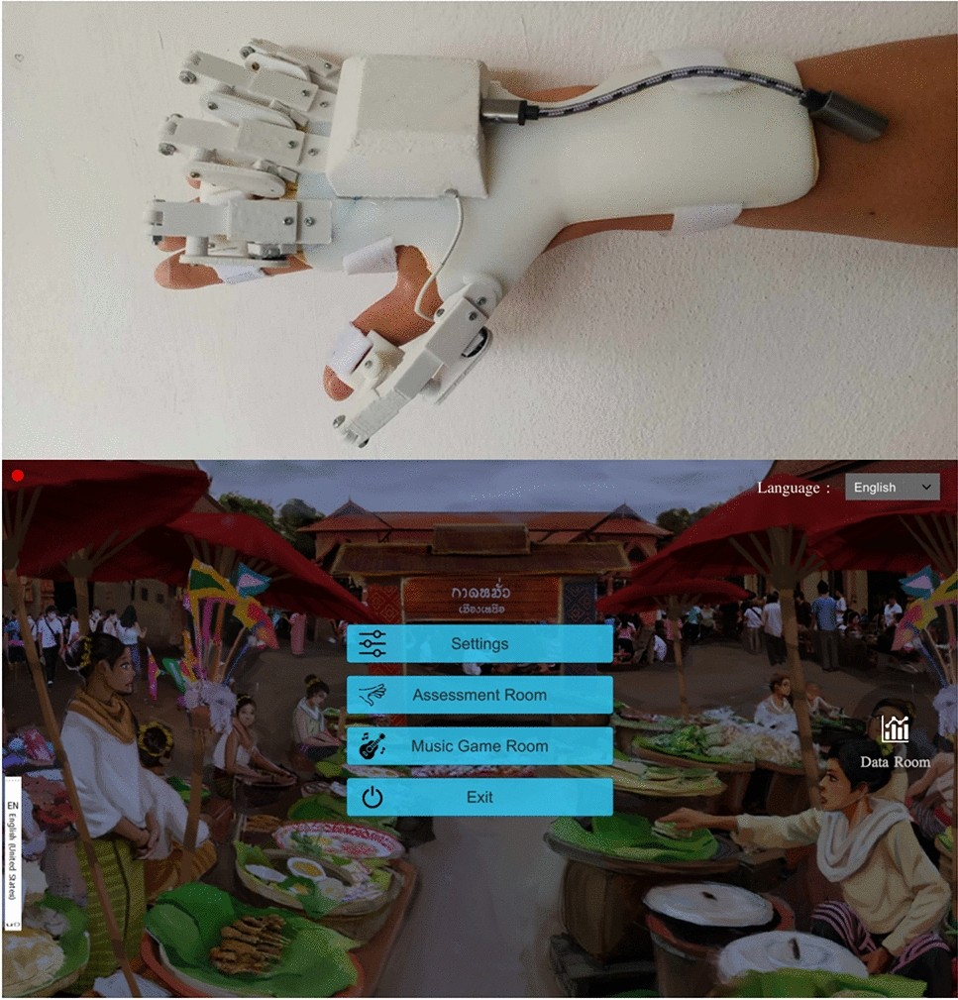

„Syrebo“ klinikinių tyrimų rubrika
Įrodymais pagrįstos robotinių pirštinių reabilitacijos tyrimų apžvalgos
Iš straipsnio
Validity and reliability of a finger training tool for assessing metacarpal phalangeal joint ranges of motion in asymptomatic participants
P. Kuvijitsuwan, J. Klaphajone, P. Singjai, T. Kumpika, N. Thawinchai, C. Angkurawaranon, C. Aramrat, K. Utarachon
Scientific Reports, 2024;14:20113
DOI: 10.1038/s41598-024-71094-y

Šio straipsnio negalima įtraukti į tą patį sąrašą kaip tiesioginio prekės ženklo eksperimento. Aparatas buvo Chiang Mai University sukurtas „air-guitar“, naudotas sveikų suaugusiųjų statiniam pirštų lenkimui matuoti. „Syrebo“ įžangoje minimas kaip komercinio prietaiso pavyzdys. Straipsnio vertė susijusi su universiteto instrumento atitiktimi goniometrui ir pakartotinių matavimų rezultatais, o ne su bet kurios pirštinės veikimu ar klinikiniu poveikiu.
Ieškant prekės ženklo randama įžangose, diskusijose ir literatūros sąrašuose. Radinys reiškia, kad autoriai paminėjo pavadinimą. Metoduose nurodytas aparatas yra šiame tyrime faktiškai naudotas prietaisas.
Antrinį paminėjimą laikant produkto tyrimu prarandamas ryšys tarp katalogo ir iš tikrųjų bandytos įrangos. Straipsnis įtrauktas į papildomą dalį, kad ši riba būtų aiški.
Prekės ženklo paieška taip pat randa produktų sąrašus įžangose. Radinys reiškia, kad autoriai paminėjo pavadinimą. Metoduose nurodytas aparatas yra tirtas prietaisas. Antrinį paminėjimą laikant produkto tyrimu prarandamas ryšys tarp įrodymų lentelės ir faktiškai bandytos įrangos.
Instrumentas sukurtas Chiang Mai University ir nėra „Syrebo“ produktas. Tyrime jis lygintas su pirštų goniometru, o matavimai pakartoti tą pačią dieną ryte ir po pietų. Sistemos skiriamoji geba nurodyta 0.01°, o tyrime naudotas Jamar pirštų goniometras buvo nuskaitomas 5° žingsniu (straipsnyje taip pat teigiama, kad rodmeniui esant tarp padalų nuskaitoma 2,5°; tikslią nuskaitymo taisyklę dar reikia išaiškinti). Matuotas statinis maksimalus lenkimas, o ne trimatis judesys. Pateiktas originalus 1 paveikslas rodo paties tyrimo aparatą.
Aparatas Chiang Mai University sukurtas statiniam maksimaliam pirštų lenkimui matuoti. Tai nėra šio prekės ženklo pirštinė. Palyginimo instrumentas buvo pirštų goniometras. Matavimai pakartoti tą pačią dieną ryte ir po pietų. Sistemos skiriamoji geba yra 0.01 laipsnio, o tyrime naudotas Jamar pirštų goniometras buvo nuskaitomas 5 laipsnių žingsniu (straipsnyje taip pat teigiama, kad rodmeniui esant tarp padalų nuskaitoma 2,5°; tikslią nuskaitymo taisyklę dar reikia išaiškinti). Pateiktas originalus 1 paveikslas rodo paties tyrimo aparatą.
Rezultatai yra matavimo savybės, o ne gydymo baigtys: atitiktis goniometrui, pakartotinio matavimo koreliacija, standartinė matavimo paklaida ir mažiausias aptinkamas pokytis esant 95%. Dalyviai buvo 10 sveikų, dešiniarankių suaugusiųjų be simptomų.
Tyrimo planas
Sveikų suaugusiųjų validumo ir pakartotinio matavimo patikimumo tyrimas. Palyginimo instrumentas buvo pirštų goniometras. Gydymo paskirstymo ir treniruočių kurso nebuvo.
Dalyviai ir tvarkaraštis
Dešimt sveikų, dešiniarankių suaugusiųjų be simptomų, vidutinis amžius 34.6 metų: aštuoni vyrai ir dvi moterys. Imtis neapima pacientų ar dinaminio suėmimo.
Pagrindiniai rezultatai
Atitikties goniometrui konkordancijos koreliacija buvo 0.62–0.90, o vidutinis skirtumas – apie 1°. „Air-guitar“ pakartotinio matavimo vidinės klasės koreliacija buvo 0.82–0.99, standartinė matavimo paklaida 1°–3°, o mažiausias aptinkamas pokytis esant 95% – 1°–9°. Šie skaičiai apibūdina universiteto sukurtą instrumentą. Straipsnyje nurodoma, kad kai kurie individualūs matavimai skyrėsi labiau, ir įspėjama, jog instrumentas gali nepakeisti klinikinio goniometro. Jų negalima pateikti kaip „Syrebo“ prietaiso validavimo.
Straipsnis įtrauktas dėl skirtumo tarp prekės ženklo paminėjimo ir eksperimento su tuo prekės ženklu. Metoduose nurodytas aparatas yra svarbesnis už produktų sąrašą įžangoje.
Straipsnis įtrauktas tam, kad prekės ženklo paieška būtų vertinama pagal metoduose nurodytą aparatą. Atitiktis ir pakartotinio matavimo rezultatai priklauso universiteto sukurtam instrumentui. Jų negalima perrašyti kaip prekės ženklo prietaiso validavimo ar taikyti pacientams ir dinaminiam suėmimui.
Ribotumai Tik dešimt sveikų suaugusiųjų. Tik statinis maksimalus lenkimas be trimačio judesio standarto. Aparatas sukurtas universitete. Tai nėra tiesioginis klinikinis ar inžinerinis „Syrebo“ tyrimas. Prekės ženklų sąrašas įžangoje nėra naudotų aparatų sąrašas.